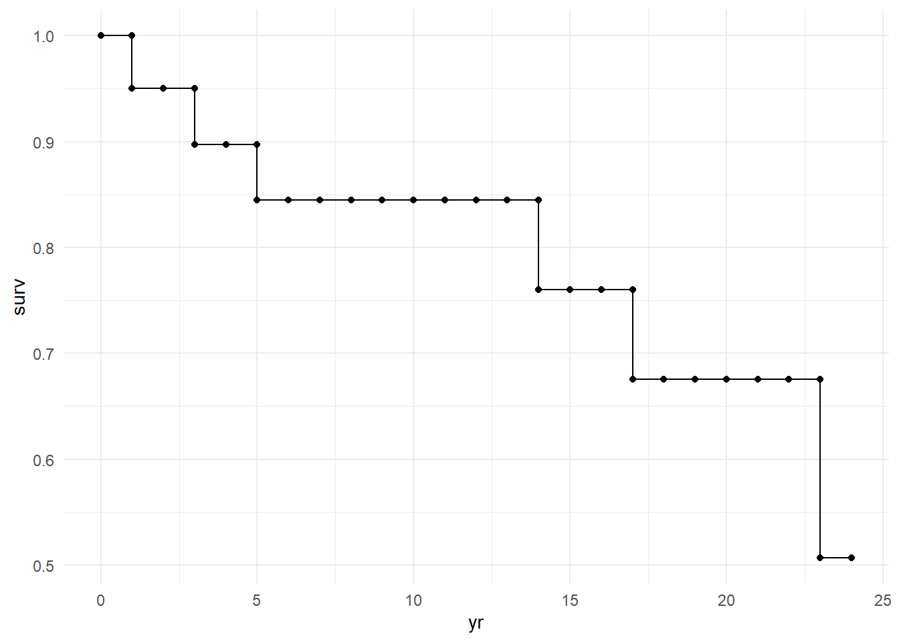

Hand-made Kaplan-Meier
This is attempt to calculate KM “by hand” to better understand the underlying math. I am starting with this tutorial.
Code
library(tidyverse)Recreating the data as it is presented
Code
id <- seq(1, 20)
yr_of_death <- c(NA, 3, rep(NA, 4), 14, rep(NA, 6),1, NA, 23, NA, 5, NA, 17)
yr_last <- c(24, NA, 11,19,24,13, NA, 2,18,17,24,21,12, NA, 10, NA, 6, NA, 9, NA)
df <- data.frame(id = id, yr_of_death = yr_of_death,
yr_last = yr_last)
kableExtra::kable(head(df))| id | yr_of_death | yr_last |
|---|---|---|
| 1 | NA | 24 |
| 2 | 3 | NA |
| 3 | NA | 11 |
| 4 | NA | 19 |
| 5 | NA | 24 |
| 6 | NA | 13 |
Manipulating the data to simulate the structure for further analysis. It provides a timeline data for each participant
Code
uncounted <- df |>
mutate(end_time = ifelse(is.na(yr_last), yr_of_death, yr_last),
end_event = ifelse(is.na(yr_last), "death", "f/u")) |>
mutate(remain_time = 24-end_time)
until_event <- uncounted |>
uncount(end_time, .remove = F) |>
mutate(yr = row_number(),
event = ifelse(yr == end_time,end_event , "0"),
n = n(),
status = "in",
.by = id)
after_event <- uncounted |>
uncount(remain_time, .remove = F) |>
mutate(yr1 = row_number() -1 ,
idk1 = remain_time - yr1,
yr = idk1 + end_time,
event = "0",
n = n(),
status = paste0("lost-", end_event),
.by = id) |>
select(-yr1, -idk1)
event_table <- rbind(until_event, after_event) |>
arrange(id, yr) |>
select(id, yr, status, event)|>
mutate(yr_group = cut(yr, breaks = c(0,4,9,14,19, 24))) |>
mutate(yr_group_label = case_when(
yr <=4 ~ "0-4",
yr <= 9 ~ "5-9",
yr <= 14 ~ "10-14",
yr <= 19 ~ "15-19",
yr <= 24 ~ "20-24",
T ~ "Other"
))Kaplan-Meier
Summarizes the data for the KM plot, giving survival probability per time point
Method 1
Code
km_no_at_risk <- event_table |>
summarise(n = n(),
.by = c(yr, status),
) |>
arrange(yr) |>
filter(status == "in") |>
rename(n_atrisk = n)
km_no_events <- event_table |>
summarise(n = n(),
.by = c(yr, event),
) |>
arrange(yr) |>
pivot_wider(id_cols =yr,
names_from = event,
values_from = n) |>
janitor::clean_names() |>
select(-x0) |>
mutate(across(death:f_u, ~ replace_na(.x, 0)))
km_data <- km_no_at_risk |>
left_join(km_no_events, by = "yr") |>
add_case(yr = 0, status = "in", n_atrisk = 0, death = 0, f_u = 0, .after = 0) |>
mutate(idk = (n_atrisk-death)/n_atrisk,
idk = ifelse(yr ==0, 1, idk),
surv_prop = accumulate(idk, ~ .x*.y))
## Old loop - I moved to the accumulate function above
# output <- c()
# input <- kmtable1$idk
# output[1] <- input[1] * 1
#
# for (i in 2:length(input)) {
# output[i] <- input[i] * output[i - 1]
# }
#
#
# km_data <- cbind(kmtable1, surv_prop = output)
km_data |>
select(yr, surv_prop) |>
distinct(surv_prop, .keep_all = T) yr surv_prop
1 0 1.0000000
2 1 0.9500000
3 3 0.8972222
4 5 0.8444444
5 14 0.7600000
6 17 0.6755556
7 23 0.5066667Method 2
This does the same as but without breaking it down per person
Code
km_data2 <- df |>
mutate(yr = ifelse(is.na(yr_last), yr_of_death, yr_last),
event = ifelse(is.na(yr_last), "death", "lost f_u"),
across(yr_of_death:yr_last, ~ ifelse(is.na(.x), 0, 1))) |>
arrange(yr) |>
mutate(t_death = sum(yr_of_death),
t_lost = sum(yr_last),
.by = yr) |>
mutate(cum_death = cumsum(yr_of_death),
cum_lost = cumsum(yr_last),
cum_loss = cum_death + cum_lost,
at_risk = ifelse(yr == 1, nrow(df), nrow(df) - lag(cum_loss))) |>
arrange(yr, -at_risk) |>
distinct(yr, t_death, t_lost, .keep_all = T) |>
select(yr, t_death, t_lost, at_risk) |>
mutate(prt1 = (at_risk-t_death)/at_risk,
surv_prop = accumulate(prt1, ~ .x*.y))
## Old loop - replaced with accumulate
# output <- c()
# input <- kmtable2$prt1
# output[1] <- input[1] * 1
#
# for (i in 2:length(input)) {
# output[i] <- input[i] * output[i - 1]
# }
#
#
# km_data2 <- cbind(kmtable2, surv_prop = output)
km_data2 |>
select(yr, surv_prop) |>
distinct(surv_prop, .keep_all = T) yr surv_prop
1 1 0.9500000
2 3 0.8972222
3 5 0.8444444
4 14 0.7600000
5 17 0.6755556
6 23 0.5066667It is the same as using the functions from survival
Code
library(survival)
event_table|>
filter(event != "0") |>
mutate(event2 = ifelse(event == "death", 2, 1)) %>%
do(surv = survfit(Surv(yr, event2) ~ 1, data = .)) |>
pull(surv) |>
first() |>
summary()Call: survfit(formula = Surv(yr, event2) ~ 1, data = .)
time n.risk n.event survival std.err lower 95% CI upper 95% CI
1 20 1 0.950 0.0487 0.859 1.000
3 18 1 0.897 0.0689 0.772 1.000
5 17 1 0.844 0.0826 0.697 1.000
14 10 1 0.760 0.1093 0.573 1.000
17 9 1 0.676 0.1256 0.469 0.973
23 4 1 0.507 0.1740 0.258 0.993Gets the figure for the KM
Code
km_data |>
mutate(surv2 = lag(surv_prop)) |>
pivot_longer(cols = c(surv_prop, surv2),
names_to = "type",
values_to = "surv") |>
arrange(yr, -surv) |>
mutate(surv = replace_na(surv, 1)) |>
ggplot(aes(x = yr, y = surv)) +
geom_point() +
geom_line() +
theme_minimal()
Actuarial Table
Gives life table (actuarial table) by sorting into time intervals
Code
### Acturary table -----------------------------------------------
prt1 <- event_table |>
summarise(n = n(),
.by = c(yr_group, event)) |>
arrange(yr_group) |>
filter(event != 0) |>
pivot_wider(id_cols = yr_group,
names_from = event,
values_from = n) |>
janitor::clean_names()
prt2 <-event_table |>
summarise(n = n(),
.by = c(yr,yr_group, status)) |>
filter(status == "in") |>
slice_min(yr, by = yr_group) |>
rename(n_alive = n) |>
select(-status)
act_table <- prt1 |>
left_join(prt2, by = "yr_group")
act_table2 <- act_table |>
mutate(at_risk = n_alive - (f_u/2),
prop_death = ncar::Round(death/at_risk, 3),
prop_surv_atrisk = 1-prop_death)
output <- c()
input <- act_table2$prop_surv_atrisk
output[1] <- input[1] * 1
# Loop through the remaining elements to perform the calculation
for (i in 2:length(input)) {
output[i] <- input[i] * output[i - 1]
}
output[1] 0.8970000 0.8404890 0.7707284 0.6682215 0.4457038Code
cbind(act_table2, surv_prop = output) yr_group death f_u yr n_alive at_risk prop_death prop_surv_atrisk surv_prop
1 (0,4] 2 1 1 20 19.5 0.103 0.897 0.8970000
2 (4,9] 1 2 5 17 16.0 0.063 0.937 0.8404890
3 (9,14] 1 4 10 14 12.0 0.083 0.917 0.7707284
4 (14,19] 1 3 15 9 7.5 0.133 0.867 0.6682215
5 (19,24] 1 4 20 5 3.0 0.333 0.667 0.4457038